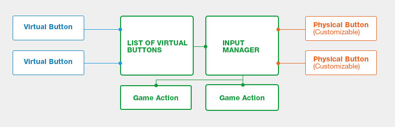

仮想ボタン
中級 プログラマー
制御を物理的なキーやボタンにバインドするのではなく、仮想ボタンにバインドすることができます。ユーザーは、物理ボタンを仮想ボタンに割り当てて、独自の制御方法を作成できます。
たとえば、ファーストパーソン シューティング ゲームを開発していて、UseMedkit 関数にキーを割り当てる必要があるものとします。関数を特定のキーにバインドするのではなく、UseMedkit という名前の仮想ボタンを作成し、それをたとえば F キーに割り当てることができます。プレイヤーは、好みに応じて、実行時に別のキーに仮想キーをバインドできます。

仮想ボタンを使用する
- キー、ボタン、またはポインターを仮想ボタン (たとえば MyButton) にバインドします。
- 仮想ボタンのリストを作成します。
- MyButton を仮想ボタンのリストに追加します。
- 関数を MyButton に割り当てます。
- 追加の仮想ボタンを作成します。
- 追加のボタンを同じリストに追加するか、または新しいリストを作成します。
コード例
public override void Start()
{
base.Start();
// 存在しない場合は、新しい VirtualButtonConfigSet を作成する。
Input.VirtualButtonConfigSet = Input.VirtualButtonConfigSet ?? new VirtualButtonConfigSet();
// 「M」キー、ゲームパッドの「Start」ボタン、左マウス ボタンを、仮想ボタン「MyButton」にバインドする。
VirtualButtonBinding b1 = new VirtualButtonBinding("MyButton", VirtualButton.Keyboard.M);
VirtualButtonBinding b2 = new VirtualButtonBinding("MyButton", VirtualButton.GamePad.Start);
VirtualButtonBinding b3 = new VirtualButtonBinding("MyButton", VirtualButton.Mouse.Left);
VirtualButtonConfig c = new VirtualButtonConfig();
c.Add(b1);
c.Add(b2);
c.Add(b3);
Input.VirtualButtonConfigSet.Add(c);
}
public override void Update() {
float button = Input.GetVirtualButton(0, "MyButton");
}